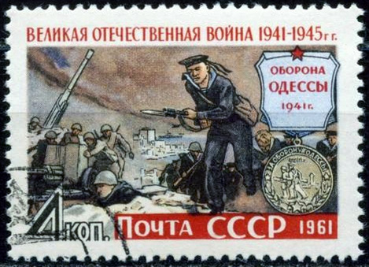
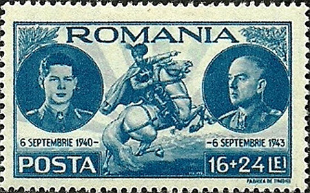
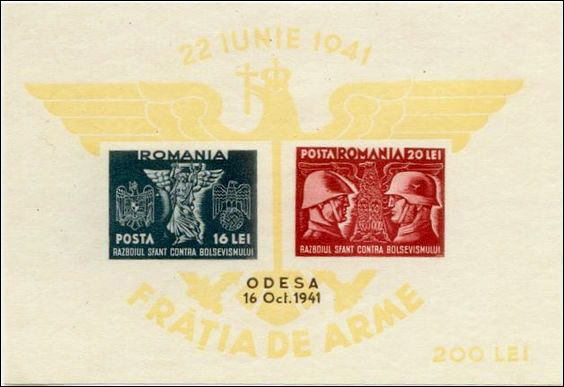
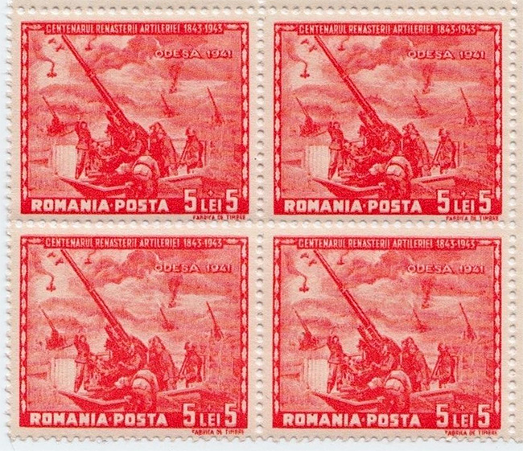
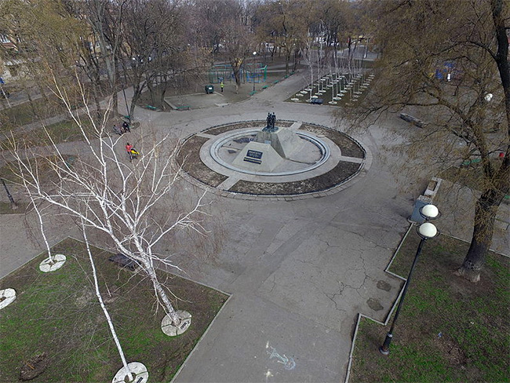
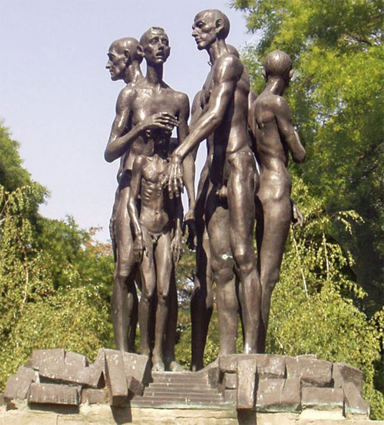
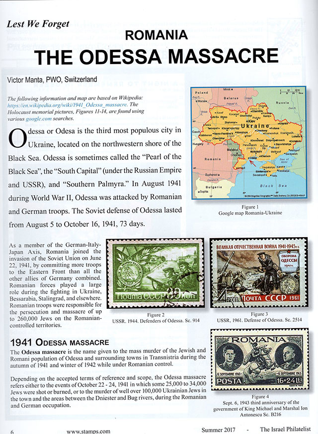

ROMÂNIA - MASACRUL DIN ODESA
Victor Manta, PWO
Odesa este al treilea cel mai populat oraş al Ucrainei, localizat pe ţărmul de Nord-Vest al Mării Negre. Odesa este uneori denumită « Perla Mării Negre », sau « Capitala Sudului » (sub Imperiul Rus şi URSS), sau « Palmira Sudului ».
Odesa a fost atacată de trupele României şi Germaniei în august 1941. Apărarea sovieticilor a Odesei a durat 73 de zile. de la 5 august până la 16 octombrie.
Figura 1. URSS. 1944. Apărătorii Odesei. Sc. 914
În calitate de membru al Axei, România s-a alăturat Germaniei în invaziunea URSS-ului pe 22 iunie 1941. Ea a alocat pe Frontul de Est mai multe trupe decât toţi aliaţii Germaniei împreună. Forţele armate române au jucat un mare rol în luptele din Ucraina, Basarabia, la Stalingrad şi în alte părţi. Trupele româneşti au fost responsabile pentru persecuţii şi masacrarea a până la 260.000 de evrei pe teritoriile ocupate de România.

Figura 2. URSS, 1961. Apărarea Odesei. Sc. 2514
Masacrele din Odesa din 1941
Masacrele din Odesa este numele dat omorurilor în masa a populaţiilor evreieşti şi roma din Odesa şi oraşele înconjurătoare din Transnistria de-a lungul toamnei lui 1941 şi a iernii din 1942, în timp ce erau sub control românesc.

Figura 3. România. 1943. Regele Mihai şi mareşalul Ion Antonescu. Sc. B216
În funcţie de termenii de referinţă aplicaţi şi de domeniul de aplicare, masacrele din Odesa se referă fie la evenimentele din 22 - 24 octombrie 1941, atunci când 25.000 la 35.000 de evrei au fost împuşcaţi sau arşi, sau la asasinarea a peste 100.000 de evrei ucraineni în oraş şi în regiunile dintre Nistru şi Bug, în timpul ocupaţiei româneşti şi germane.
Figura 4. România. 1941. Ocuparea Odesei, USSR. Supratipare. Sc. B175 - B178
Înaintea masacrului
Înaintea războiului Odesa avea o largă populaţie evreiască de aproximativ 180.000, cee ace reprezenta 30% din populaţia totală a oraşului. Pe vremea când românii au cucerit oraşul între 80.000 şi 90.000 de evrei au fost abandonaţi de autorităţile sovietice, iar restul s-au evacuat. Când au avut loc masacrele evreii din satele înconjurătoare vor fi concentraţi în Odesa şi lagăre de concentrare româneşti în zonele din jurul Odesei.

Figura 5. România 1941. Ocuparea Odesei, URSS. Supratipar. Sc. B178A
Germanii şi românii au capturat Odesa în octombrie 16, în urma unui asediu de două luni. O bombă cu explozie întârziată, plasată de geniştii sovietici, a explodat pe 16 octombrie în sediul armatei române, omorând 67 de persoane, în majoritatea lor ofiţeri români şi germani.
Masacrele din 22 - 24 octombrie
Învinovăţindu-i pe evrei şi pe comunişti pentru bombă, trupele române au început cu represaliile chiar în aceeaşi seară. În jurul prânzului zilei următoare, 23 octombrie, 5.000 de civili au fost arestaţi şi împuşcaţi, în majoritatea lor evrei. În dimineaţa lui 23 octombrie peste 19.000 de evrei au fost adunaţi în patru arsenale de pe lângă port şi împuşcaţi, după care li s-a dat foc arsenalelor. Unii dintre prizonieri au fost arşi de vii.

Figura 6. România. 1943. Centenarul artileriei. Odesa. Sc. B228
În acea după amiază peste 20.000 de evrei au fost scoşi din oraş, formând o lungă coloană. La Dalnik ei au fost legaţi împreună în grupuri de 40 – 50 de persoane, aruncaţi într-un şanţ antitanc şi împuşcaţi. Deoarece împuşcatul dura prea mult, restul de evrei a fost dus în patru antrepozite mari, în care fuseseră făcute deschideri pentru mitraliere. Uşile au fost încuiate şi soldaţii au tras în interiorul cădirilor. A doua zi ei au dat foc la trei dintre clădiri, care erau tixite cu femei şi copii. Cei ce încercau să scape prin ferestre sau găuri în acoperiş erau împuşcaţi sau împiedecaţi prin aruncarea de grenade. Pe 25 octombrie a patra clădire, în care se aflau bărbaţii, au fost supusă unui bombardament de artilerie.
În jur de 35.000 – 40.000 de evrei rămaşi au fost duşi într-un gheto în cartierul Slobodka, unde majoritatea clădirilor erau distruse, şi lăsaţi afară între 25 octombrie şi 3 noiembrie. Mulţi dintre ei au murit din cauza frigului.
Continuarea masacrării evreilor din Odesa
Pe 28 octombrie a început un nou masacru atunci când 4.000 – 5.000 de evrei au fost înghesuiţi în grajduri şi împuşcaţi. La sfârşitul lui decembrie a fost omorât un număr suplimentar de 50.000 de evrei din lagărul de concentrare de la Bogdanovka. Alţi 10.000 de evrei au fost duşi, într-un marş al morţii, la trei lagăre de concentrare. Cei care au supravieţuit marşului au fost ucişi după alte două luni, ca şi zeci de mii de mii de evrei care au fost aduşi în aceste lagăre din Transnistria de Nord şi Basarabia.

Figure 7. Memorialul Holocaustului din Odesa
Pe 28 decembrie 1941 comandantul şef roman de la sediul central a executat ordinele primate de la mareşalul Ion Antonescu şi i-a deportat pe evreii rămaşi din Odesa. În ianuarie 1942 exterminarea s-a încheiat prin uciderea celor care au rămas în Slobodka. Între ianuarie 12 – 23 ultimii 19.582 de evrei au fost transportaţi în vagoane de vite la Berezovka, iar de acolo la lagărele de concentrare din Golta. Într-un interval de 18 luni toţi au decedat.

Figure 8. Memorialul Holocaustului din Odesa - partea de susMărcile prezentate pe această pagină
Mărcile sunt des folosite pentru scopuri de propaganda, dar ceea ce ne spun ele nu este greu de descifrat de către cei care cunosc istoria ţărilor emitente.
• Figura 1. URSS. 1944. Apărătorii Odesei. Sc. 914
• Figura 2. URSS, 1961. Apărarea Odesei. Sc. 2514
În prim plan apar marinari ai flotei Mării Negre care au fost aruncaţi în luptă în disperare, înlocuind trupele lipsă de infanterie, mult mai bine echipate şi antrenate pentru acţiuni pe uscat. Comparaţi pe Sc. 2514 echipamentul marinarilor cu cel al trupelor de artilerie ce apar alături.
• Figura 3. România. Regele Mihai şi mareşalul Ion Antonescu. Sc. B216
6 septembrie 1943, a treia aniversare a guvernului Regelui Mihai şi a mareşalului Antonescu
România era condusă în acea vreme de Primul Ministru Ion Antonescu, care a preluat şi conducerea Afacerilor Externe şi pe cea de Ministru al Apărării. Deşi Regele Mihai era formal Comandantul Suprem al Armatei şi având dreptul să numească Primul Ministru, el a fost forţat să rămână doar o figură de décor până în august 1944. După război Ion Antonescu a fost condamnat pentru crime de război şi executat. Ca urmare a Raportului din 2003 a Comisiei Wiesel, participarea sa la Holocaust a fost oficial reafirmată şi condamnată.
Între Rege şi Antonescu pe marcă apare statuia ecvestră a domnitorului Mihai Viteazul, cel care în Evul Mediu a unit pentru scurt timp teritoriile de limbă română. Ea are scopul să ne amintească faptul că Armata Română se afla în luptă pentru realipirea Basarabiei şi Bucovinei de Nord, ocupate de URSS în urma Ultimatumului sovietic dat guvernului României pe 26 iunie 1940. Administraţia sovietică a avut o serie de campanii de persecuţie, ce a inclus arestări, depotări în lagăre de muncă şi execuţii.
• Figura 4. România 1941. Ocuparea Odesei, URSS. Supratipare. Sc. B175 - B178.
Acestea sunt supratipăriri ale seriei Sc. B170 – B174. Toate mărcile sunt inscripţionate cu “RAZBOIUL SFANT CONTRA BOLSEVISMULUI”. Prin “Bolshevism” propaganda românească îi desemna pe comuniştii sovietici şi pe pretinşii lor aliaţi, evreii. Astfel această propaganda era pe cât de anticomunistă, pe atât de antisemitică.
• Figura 5. România 1941. Ocuparea Odesei, USSR. Supratipar. Sc. B178A
Este versiunea supratiărită a coliţei Sc. B174. Ea este inscripţionată “22 IUNIE 1941”, adică începutul războiului împotriva URSS şi “FRĂŢIA DE ARME”, cu referire la militarii români şi germani.
• Figura 6. România. 1943. Centenarul artileriei române. Odesa. Sc. B228
Este o marcă ce face parte dintr-o serie cu alte şapte, Sc. B224 - B231. Alte mărci din serie sunt dedicate asediului Stalingradului (Sc. B226) şi a Sevastopolului (Sc. B230). Ca şi pentru Odesa, aceste acţiuni nu pot fi justificate prin dorinţa de recuperare a unor teritorii pierdute cu forţa, deoarece ele nu au aparţinut niciodată României.
Sursa: Wikipedia
Note
- Această pagină a fost inspirată de vizitarea, în 2016, a lui Yad Vashem - Centrul Mondial de Amintire a Holocaustului, din Ierusalim, Israel.
- O revistă filatelică românească, cu care am colaborat multă vreme, a refuzat publicarea acestui articol. Amănuntele se pot afla de aici.
- Acest articol a apărut în Vol. LXVIII No. 3 al revistei americane The Israel Philatelist, p. 6 - 9. Public mai jos scanul primei pagini (pag. 6 a revistei).
